전파전자통신기사 (2004-08-08 기출문제)
1과목: 디지털전자회로
1. 그림과 같은 반파정류회로의 동작 설명과 관련이 없는 것은?
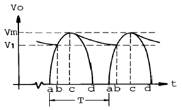
- 평활콘덴서에 충전전류가 흐르는 기간은 파형의 bc 기간 동안이다.
- 리플전압의 피크투피크(p-p) 값은 Vm-V1 이다.
- 입력교류 주기는 T 이며, 리플주기와 같다.
- 출력직류 전압의 평균값은 V1 이 되며, 이 값은 부하에 비례한다.
(정답률: 알수없음)

2. 다음 회로에서 그림과 같은 입력파에 대해 출력파형은? (단, 다이오드 D1, D2와 연산증폭기는 이상적이다.)
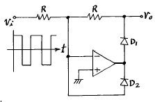
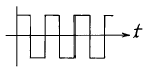
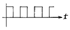
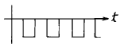
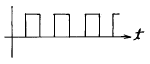
(정답률: 알수없음)
3. RS 플립-플롭 논리회로의 설명으로 틀린 것은?
- 2개의 입력 R, S와 2개의 출력 Q,
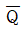
를 갖는다. - 입력 R, S가 저레벨일 때 출력 Q,
 는 전상태를 유지한다.
는 전상태를 유지한다. - S가 고레벨일 때 Q,
 가 모두 저레벨로 된다.
가 모두 저레벨로 된다. - R과 S가 같이 고레벨이면 출력은 불확정이다.
(정답률: 알수없음)
4. PM파와 FM파의 스펙트럼 분포의 관계 중 틀린 것은?
- PM파와 FM파의 스펙트럼은 반송파를 중심으로 해서 위, 아래로 변조 주파수 간격으로 무한히 발생한다.
- PM파의 변조지수 mp는 위상편이량 Δ ø 와 같으므로 변조 신호전압에 역비례 한다.
- PM파에서나 FM파에서 변조 신호전압을 높게 하면 대역폭은 넓게 된다.
- 변조주파수를 높게 하면 PM에서는 대역폭이 비례하여 커진다.
(정답률: 알수없음)
5. 플립플롭회로를 활용할 수 없는 것은?
- 주파수분할기
- 주파수체배기
- 2진계수기
- 기억소자
(정답률: 알수없음)
6. 45[㎒]의 반송파를 최대 주파수편이 38[㎑]로 하고, 9[㎑]의 신호파로 주파수 변조를 했을 경우 주파수 대역은?
- 47[㎑]
- 94[㎑]
- 38[㎑]
- 9[㎑]
(정답률: 알수없음)
7. 그림과 같이 연산증폭기를 사용한 위인(Wien)브리지에서 이 발진회로의 발진주파수 f는?
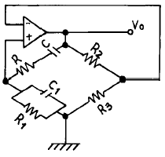
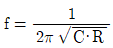
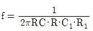
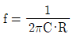
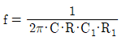
(정답률: 알수없음)
8. 이미터 폴로워(emitter follower)의 특징을 설명한 것 중 옳지 않은 것은?
- 전압이득은 1에 가깝다.
- 전류이득은 1보다 크다.
- 전력증폭에 적합하다.
- 입력임피던스가 크고 출력임피던스는 작다.
(정답률: 알수없음)
9. 아래 반전증폭회로의 출력전압은 얼마인가? (단, 연산증폭기의 개방이득은 ∞라고 본다.)
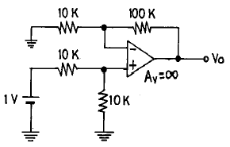
- 5.5[V]
- 10.5[V]
- 11[V]
- 21[V]
(정답률: 알수없음)
10. 다음 단일 구형파를 미분회로에 통과시키면 출력파형은?
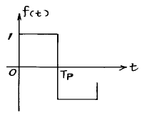
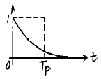
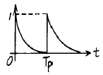
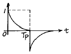
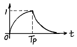
(정답률: 알수없음)
11. 그림과 같은 CR회로에서 지수 함수적으로 증가하는 경우는 어느 것인가?
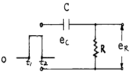
- t1에서의 ec
- t1에서의 eR
- t2에서의 ec
- t2에서의 eR + ec
(정답률: 알수없음)
12. 다음과 같은 정보신호를 진폭변조할 때 가장 넓은 대역의 스펙트럼 분포를 차지하게 되는 것은?
- 1[kHz]의 정현파
- 1[kHz]의 펄스파
- 5[kHz]의 정현파
- 5[kHz]의 펄스파
(정답률: 알수없음)
13. 로가리즘 앰프(logarithm amp)는 어느 것인가? (단, OP amp는 이상적으로 간주한다.)
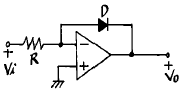
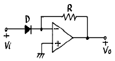
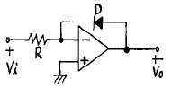
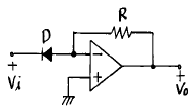
(정답률: 알수없음)
14. 에미터 저항을 가진 CE 증폭기의 특징에 관한 설명 중 옳지 않은 것은?
- 전류이득의 변화가 거의 없다.
- 입력저항이 증대된다.
- 출력저항이 증대된다.
- 전압이득이 크게 된다.
(정답률: 알수없음)
15. exclusive-OR와 exclusive-NOR에 해당하는 논리식을 상호 변환한 아래의 식 중에서 틀린 것은?
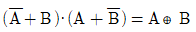
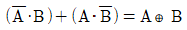
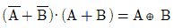
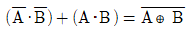
(정답률: 알수없음)
16. 비동기식 계수기(counter)와 관계가 없는 것은?
- 리플 카운터라고도 하다.
- 동작속도가 느리다.
- 전단의 출력이 다음 단의 입력이 된다.
- 동작속도가 고속이다.
(정답률: 알수없음)
17. 이상적인 연산증폭기의 조건중 옳지 못한 것은?
- 전압이득이 무한대
- 입력저항이 무한대
- 출력저항이 무한대
- 밴드폭이 무한대
(정답률: 알수없음)
18. 다음 회로의 출력은?
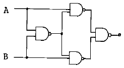
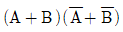
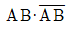
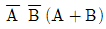
- A B
(정답률: 알수없음)
19. 집적회로(IC)에서 고주파 특성을 제한하는 요인은?
- 저항
- 다이오드
- 기생 커패시턴스
- 실리콘
(정답률: 알수없음)
20. 1,024개의 입력 펄스가 들어올 때마다 한 개의 출력 펄스를 발생시키려고 한다. T플립플롭을 이용할 경우 몇 개가 필요한가?
- 4개
- 6개
- 8개
- 10개
(정답률: 알수없음)
2과목: 무선통신기기
21. 어떤 수신기의 고주파 증폭이득이 20 [dB], 주파수 변환 이득이 -5 [dB], 중간주파 이득이 60 [dB], 저주파 이득이 25 [dB]라면 입력에 1[㎶]의 전압을 가하면 출력은 몇 [V]인가?
- 0.01[V]
- 0.1[V]
- 0.5[V]
- 1[V]
(정답률: 알수없음)
22. 수정 발진회로에서 수정진동자의 전기적 직렬 공진 주파수를 fs, 병렬 공진 주파수를 fp라 하면 안정한 발진을 하기 위한 동작 출력 주파수 fo는 아래 어느 것인가?
- fs < fo > fp
- fs < fo < fp
- fs > fo > fp
- fo = fs
(정답률: 알수없음)
23. 전압 정재파비가 3인 어떤 급전선에서 진행파 전압이 10[V]라면 반사파 전압은 몇 [V] 인가?
- 3[V]
- 3.3[V]
- 5[V]
- 15[V]
(정답률: 알수없음)
24. 파라메트릭(parametric Amp) 증폭기의 증폭에너지 주공급처는?
- 터널다이오드
- 직류전원
- 여진교류전원
- 태양전지
(정답률: 알수없음)
25. 스켈치(Squelch)회로의 입력은 어느 단에서 얻는가?
- 고주파증폭단
- 중간주파증폭단
- 저주파증폭단
- 주파수변별기
(정답률: 알수없음)
26. AM 송신기의 변조특성의 측정이 아닌 것은?
- 변조 포락선에 의한 방법
- 사다리꼴 도형에 의한 방법
- 타원 도형에 의한 방법
- 전구의 조도에 의한 방법
(정답률: 알수없음)
27. 다음 중 전원회로의 잡음대책에 속하지 않는 것은?
- 필터회로를 사용한다.
- 서지(surge) 흡수 소자를 사용한다.
- 실드선을 사용한다.
- 전원회로의 전압을 높게 한다.
(정답률: 알수없음)
28. 간접 FM방식에서 사용되는 전치보상회로(pre-distorter)의 설명중 틀린 것은?
- 신호 주파수에 반비례하는 회로이다.
- 미분회로의 일종이다.
- PM을 FM으로 만드는데 쓰인다.
- 입출력 위상차는 90° 이다.
(정답률: 알수없음)
29. 다음중 FM 송신기의 보조회로가 아닌 것은?
- 순시주파수편이 제어회로(IDC)
- Pre-emphasis 회로
- 진폭제한기
- 자동 주파수제어회로(AFC)
(정답률: 알수없음)
30. 전계 강도를 측정하고자 할 때 가장 적당한 안테나는?
- 루프 안테나(Loop ANTENNA)
- 애드콕 안테나(Adcoke ANTENNA)
- 고니오메타 안테나(Goniometer ANTENNA)
- 벨리니 - 토시 안테나(Bellini - Tosi ANTENNA)
(정답률: 알수없음)
31. 송신기에서 스프리어스(Spurious) 발사를 억제하기 위한 대책으로 부적합한 것은?
- 전력증폭단을 C급으로 바이어스한다.
- 공진회로의 Q를 높인다.
- 전력증폭단과 공중선회로에 π 형 결합회로를 사용한다.
- 급전선에 트랩(Trap)을 설치한다.
(정답률: 알수없음)
32. 아래의 회로중 설명이 잘못된 것은?
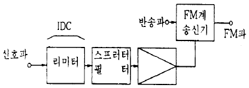
- IDC회로의 리미터에서 신호가 클리프(clip)된 경우에 발생되는 고조파를 억압한다.
- 신호의 주파수 대역을 제한한다.
- IDC회로는 송신전력 스펙트럼의 확산을 일정치 이하로 제한한다.
- 직접 FM송신기로 구성하려면 반드시 전치보상회로를 사용해야 한다.
(정답률: 알수없음)
33. 직선 검파기에서 Diagonal clipping현상이 발생하는 이유는?
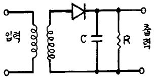
- 입력 전압이 크기 때문에
- 입력 전압이 작기 때문에
- 시정수 R.C가 클 때
- 시정수 R.C가 작을 때
(정답률: 알수없음)
34. 무선 송신기에서의 완충 증폭기와 관계없는 것은?
- 발진부 다음 단에 두는 것으로 발진주파수를 부하의 변동으로부터 보호해 준다
- 증폭이 목적이 아니므로 증폭 방식은 A급 혹은 AB급을 사용하여 안정하게 동작시킨다
- 다른 증폭부의 전원을 공동으로 사용한다.
- 발진부와 완충증폭기의 결합은 안정된 발진을 할 수 있도록 소결합한다.
(정답률: 알수없음)
35. 단상 반파 정류회로에서 정류기의 내부저항과 부하저항이 같을 때 최대 정류 효율은 얼마인가?
- 20.3%
- 40.6%
- 60.4%
- 81.2%
(정답률: 알수없음)
36. 위성의 제어를 위하여 위성에 있는 각 장치의 전기적인 상태 및 센서로 감지한 열에 대한 데이터의 정보를 지구국에 송신하는 기능을 갖는 장치를 무엇이라고 하는가?
- 자세제어시스템
- Telemetry시스템
- 열제어시스템
- 전원제어시스템
(정답률: 알수없음)
37. M/W 중계방식이 아닌 것은?
- 베이스 밴드(Base Band)중계방식
- 헤테로다인 중계방식
- 무급전 중계방식
- 페이딩 중계방식
(정답률: 알수없음)
38. 위성통신의 다원접속방식중 위성의 주파수스펙트럼을 분할하여 각 지구국에 할당하는 방식을 무엇이라고 하는가?
- SDMA
- FDMA
- TDMA
- CDMA
(정답률: 알수없음)
39. 정류기의 부하단의 평균전압은 200V, 실효값 맥동율이 2%일 때 교류분 실효값은?
- 8[V]
- 6[V]
- 4[V]
- 2[V]
(정답률: 알수없음)
40. super-hetrodyne 수신기에서 중간주파수를 높게 할수록 수신기의 특성이 나빠지는 것은?
- 영상주파수 선택도
- 인입현상
- 감도 및 안정도
- 전송대역 주파수 특성
(정답률: 알수없음)
3과목: 안테나공학
41. 서울에서 송신된 FM 방송신호가 부산에서 어떤 시간동안에만 일시적으로 수신되었다면 다음 중에서 어떤 경로의 전파일 가능성이 제일 높은가?
- 라디오 덕트(radio duct) 전파
- 전리층 반사파
- 자기폭풍 전파
- 산악회절이득 전파
(정답률: 알수없음)
42. 파장에 따라 크기를 달리하고 단파대에서 마이크로파대까지 사용할 수 있는 광대역 안테나는?
- 대수주기형 안테나
- 빔 안테나
- 롬빅 안테나
- 어골형 안테나
(정답률: 알수없음)
43. 안테나의 지향성을 높이는 방법이 아닌 것은?
- 반사기를 사용한다.
- 반파장 다이폴을 평면상에 배열한다.
- 가능한 한 연장선륜을 여러 개 사용한다.
- 도파기를 사용한다.
(정답률: 알수없음)
44. λ /4 수직접지 안테나에서 안테나의 기전부 전류가 10[A]일 때, 60[㎞]떨어진 점의 전계강도 E 는? (단, 1[㎶/m]를 0 dB로 함)
- 10[㏈]
- 20[㏈]
- 40[㏈]
- 80[㏈]
(정답률: 알수없음)
45. 길이 0.5[m]의 미소 다이폴 안테나에 60[MHz], 전류를 10[A] 흘렸을 때 복사전력은 약 얼마인가?
- 290[W]
- 350[W]
- 790[W]
- 870[W]
(정답률: 알수없음)
46. 다음중 회절현상이 가장 심하게 일어나는 방송파는?
- 중파
- 단파
- 초단파
- 마이크로파
(정답률: 알수없음)
47. 전방 전계의 세기를 Ef, 후방전계의 세기를 Eb 라고 할 때 전후 전계비(front to back ratio)를 옳게 표현한 식은?
- 10 log10 Ef/Eb
- 10 log10 Eb/Ef
- 20 log10 Ef/Eb
- 20 log10 Eb/Ef
(정답률: 알수없음)
48. 안테나의 길이가 20[m], 사용 파장이 200[m]로서 λ /4 보다 상당히 짧은 수직접지형 안테나가 있다. 복사저항은 대략 얼마 정도인가?
- 약 2[Ω]
- 약 4[Ω]
- 약 20[Ω]
- 약 40[Ω]
(정답률: 알수없음)
49. 다음 임피던스 정합방법 중 평행 2선식 급전선에 사용할 수 없는 방법은?
- Y형 정합
- stub에 의한 정합
- taper에 의한 정합
- gamma 정합
(정답률: 알수없음)
50. 육상이동통신환경에서 가장 문제가 되는 페이딩은?
- 신틸레이션 페이딩(scintillation fading)
- 다중경로 페이딩(multipath fading)
- 산란형 페이딩
- 감쇠형 페이딩
(정답률: 알수없음)
51. 복사저항이 35[Ω]이고 손실저항이 10[Ω] 및 도체 저항이 5[Ω]인 안테나의 효율은 몇 [%]인가?
- 25[%]
- 50[%]
- 70[%]
- 80[%]
(정답률: 알수없음)
52. 특성 임피던스 Z0=3+j2[Ω ]인 부하에 반사파 없이 최대전력을 전달하려면 다음 중 어떤 특징의 선로를 접속해야 하는가?
- 저항이 10[Ω], 리액턴스가 -10[Ω]인 선로
- 저항이 3[Ω], 리액턴스가 -10[Ω]인 선로
- 저항이 10[Ω], 리액턴스가 -2[Ω]인 선로
- 저항이 3[Ω], 리액턴스가 -2[Ω]인 선로
(정답률: 알수없음)
53. 관내의 유전체가 진공일 때 구형 도파관(TE10 mode)의 차단파장은? (단, 장변은 a, 단변은 b 이다.)
- 2a
- 2b
- a
- b
(정답률: 알수없음)
54. 태양의 폭발로 인하여 발생하는 강력한 자외선 방출에 의해 D, E 층의 전자 밀도가 급격히 증가하여 전파의 감쇠가 심하게 발생하는 현상은?
- 페이딩
- 자기폭풍
- 델린저 현상
- 공전
(정답률: 알수없음)
55. 평행2선식 급전선 중 특성임피던스가 가장 큰 것은?
- 심선의 직경 1.2[mm], 선간격 10[cm]
- 심선의 직경 1.2[mm], 선간격 20[cm]
- 심선의 직경 2.9[mm], 선간격 10[cm]
- 심선의 직경 2.9[mm], 선간격 20[cm]
(정답률: 알수없음)
56. 전압 정재파비가 S인 급전선에서 부하의 입사전력 Pi와 부하에 공급되는 전력 PL 과의 비 Pi/PL 는 얼마인가?
- 1/S2
- (S-1)2/S
- (S+1)2/4S
- (S+1)2/S
(정답률: 알수없음)
57. 접어진(folded) 안테나의 특징에 대한 설명으로 잘못된 것은?
- TV의 300[Ω] 평행2선식과 직결하여도 거의 임피던스 정합이 이루어진다.
- 전계강도, 이득, 지향성은 반파장 안테나와 동일하다.
- 반파장 안테나에 비해서 도체의 유효 단면적이 크다.
- 실효길이는 반파장 안테나의 2배이고 수신안테나로서 사용할 때 개방전압은 같게 된다.
(정답률: 알수없음)
58. 정관형 안테나에 관한 설명이다. 틀린 것은?
- 전리층 반사를 적게 하여 양청구역을 넓힐 수 있다.
- λ /4 수직접지 안테나에 원정관을 설치한다.
- 고유파장을 길게 할 수 있다.
- 실효고를 작게 할 수 있다.
(정답률: 알수없음)
59. 박쥐날개형 안테나를 직각으로 교차시켜 구성한 것으로 여러 단 겹쳐서 사용하며, 단위 안테나의 표면적이 넓게 되므로 실효적으로 안테나의 Q 가 저하하여 광대역 특성을 갖게 되는 안테나는?
- 헤리칼 안테나
- 턴스타일 안테나
- 슈퍼 턴스타일 안테나
- 슈퍼 게인 안테나
(정답률: 알수없음)
60. 지구의 반경을 6,370[km]라고 할 때 표준대기의 굴절률이 1.000313 이고 대류권내의 전파통로의 높이를 318.5[m]라 하면 M 단위 수정 굴절률은 얼마인가?
- 313
- 340
- 353
- 363
(정답률: 알수없음)
4과목: 통신영어 및 교통지리
61. 다음은 북태평양에 위치해 있는 항행경보 업무 취급국들 이다. 틀린 것은?
- HALIFAX/CFH
- KODIAK/NOJ
- VICTORIA/VAK
- VANCOUVER B.C./CKN
(정답률: 알수없음)
62. Choose the correct word for the blank.
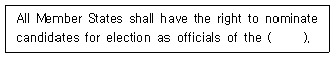
- union
- board
- conferences
- council
(정답률: 알수없음)
63. Fill in the blank with the correct one.
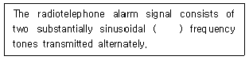
- audio
- midium
- high
- very high
(정답률: 알수없음)
64. 인천 갑문 항무통신국의 호출 부호는?
- HLC
- 6MF
- 6MV
- 6MF3
(정답률: 알수없음)
65. PERSIAN GULF에 위치해 있는 도서국가에 위치한 주요 해안국인 것은?
- JEDDAH RADIO
- BAHRAIN RADIO
- GIBRATAR RADIO
- KARACHI RADIO
(정답률: 알수없음)
66. 다음중 Gulf of Mexico 연안에 있지 않은 항구는?
- Nagoya
- Tampa
- Houston
- Galveston
(정답률: 알수없음)
67. Choose the unconcerned one among the examples of the following glossary.
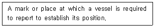
- way point
- departing point
- reporting point
- calling-in-point
(정답률: 알수없음)
68. Choose the right one for the blank.
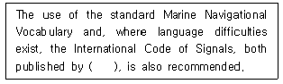
- ITU
- INMARSAT
- IMO
- ITU-T
(정답률: 알수없음)
69. New Zealand의 수도에 위치한 해안국은?
- Auckland Radio/ZLD
- Awarua Radio/ZSB
- Pitcairn Radio/ZBP
- Wellington Radio/ZLW
(정답률: 알수없음)
70. Choose the correct one.
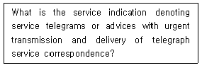
- URGENT
- OBS
- A
- RST
(정답률: 알수없음)
71. 다음은 INMARSAT 해안지구국과 그 소속 국가명을 짝지은 것이다. 틀린 것은?
- SANTAPAULA/CANADA
- EIK/NORWAY
- GOONHILLY/UNITED KINGDOM
- SOUTHBURY/U.S.A.
(정답률: 알수없음)
72. Choose the suitable one in the blank and complete following sentence.
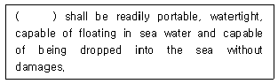
- VHF radiotelephone installations
- Portable radio apparatus for survival craft
- Radiotelegraph installation for fitting in motor life craft
- Direction finding apparatus
(정답률: 알수없음)
73. Select the wrong pronunciation among the following phonetic aplhabets.
- OO NEE FORM
- KEH BECK
- AL PAH
- PAH PAH
(정답률: 알수없음)
74. Choose the right one for the blank of the following.
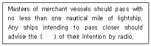
- ligtship
- merchant vessels
- masters
- ship stations
(정답률: 알수없음)
75. Choose the correct terminology and fill in the blank.
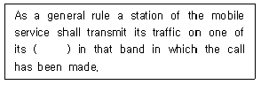
- working frequency
- function frequency
- fixing frequency
- taking frequency
(정답률: 알수없음)
76. 인도양 위성에 제공하는 우리나라 금산해안지구국의 표준 A형 아이디 번호로 맞는 것은?
- 13-2
- 04
- 13
- 10
(정답률: 알수없음)
77. What is the right phrase in blank?
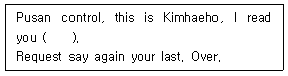
- Lima charie
- loud and clear
- strong but distorted
- weak but readable
(정답률: 알수없음)
78. Choose the best translation of the following sentence.
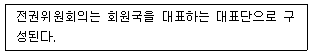
- The Plenipotentiary Conferences shall be composed of representative of the members.
- The Plenipotentiary Conferences shall be comprise of delegates representing each Administration.
- The Plenipotentiary Conferences shall be composed of experts representing each members.
- The Plenipotentiary Conferences shall be composed of delegations representing members.
(정답률: 알수없음)
79. Choose the different meaning for the explanation of the following converstation by readio telephone.
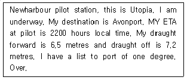
- 유토피아 선박의 목적지는 에이븐포트이다.
- 도선사(導船士)의 승선 예정시각은 지방시(地方時)로 22시이다.
- deep draught는 7.2메터이다.
- 그 선박은 좌현(左舷)으로 1도 경사되어 있다.
(정답률: 알수없음)
80. Choose the wrong one that is not suitable to express the meaning of the abbreviation.
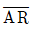
...end of transmisson- NIL...I have nothing to send to you
- MSG...starting signal
- CORRECTION...Cancel my last word or group
(정답률: 알수없음)
5과목: 전파관계법규
81. 다음 ITU 언어 중 해석상 오해나 분쟁이 있을 때 우선하는 언어는?
- 영어
- 프랑스어
- 러시아어
- 아랍어
(정답률: 알수없음)
82. 통신보안의 목적과 관계가 먼 것은?
- 비밀누설 가능성 사전 제거
- 통신내용 분석
- 정보누설 최소화
- 획득당한 정보분석 지연
(정답률: 알수없음)
83. 이동국에 대하여 전파를 발사하여 그 전파발사위치에서의 방향 또는 방위를 그 이동국으로 하여금 결정하게 할 수 있도록 하는 업무를 행하는 무선국은?
- 표준주파수국
- 무선항행국
- 무선방향탐지국
- 무선표지국
(정답률: 알수없음)
84. 무선표지국의 재허가 신청시기가 맞는 것은?
- 허가 유효기간 만료전 2개월 이상 4개월 이내의 기간
- 허가의 유효기간 만료전 2개월까지
- 허가의 유효기간 만료 후
- 무선표지국은 재허가가 필요 없다.
(정답률: 알수없음)
85. 다음 중 형식등록을 하여야 하는 무선설비의 기기에 해당하지 아니한 것은?
- 네비텍스수신기
- 주파수공용무선전화장치
- 해상이동전화용 무선설비의 기기
- 무선탐지업무용 무선설비의 기기
(정답률: 알수없음)
86. 계속적인 정보를 이용할 수 있는 INMARSAT 정지위성의 통신범위내의 해역은?
- A1해역
- A2해역
- A3해역
- A4해역
(정답률: 알수없음)
87. 다음 중 전파법 시행령에서 규정하는 업무의 분류상 해상이동업무가 아닌 것은?
- 해안국 상호간의 무선통신
- 해안국과 선박국간의 무선통신
- 선박국 상호간의 무선통신
- 선상통신국 상호간의 무선통신
(정답률: 알수없음)
88. 해안국과 선박국이 제1침묵시간 중에 발사하여서는 아니되는 주파수는?
- 495kHz부터 5⑤kHz까지의 주파수
- 490kHz부터 510kHz까지의 주파수
- 485kHz부터 515kHz까지의 주파수
- 485kHz부터 518kHz까지의 주파수
(정답률: 알수없음)
89. 다음 중 통신의 보안성이 높은 순으로 열거한 것으로 맞는 것은?
- 전령통신 - 우편통신 - 유선통신 - 무선통신
- 우편통신 - 전령통신 - 무선통신 - 유선통신
- 유선통신 - 전령통신 - 우편통신 - 무선통신
- 전령통신 - 유선통신 - 우편통신 - 무선통신
(정답률: 알수없음)
90. 국제전기통신 업무를 취급하는 선박국중 제3종국의 1일 의무운용시간은?
- 4시간
- 8시간
- 12시간
- 16시간
(정답률: 알수없음)
91. 다음중 공중선전력의 표시방법이 아닌 것은?
- 변조파전력
- 첨두포락선전력
- 반송파전력
- 평균전력
(정답률: 알수없음)
92. 통신 도청 방지와 관계가 먼 것은?
- 주파수를 수시 바꾼다.
- 비화장치를 설치한다.
- 불필요한 전파 발사를 억제한다.
- 상대방을 확인한다.
(정답률: 알수없음)
93. 상호 약정된 확인법을 사용할 필요가 없는 때는?
- 주파수를 변경했을 때
- 처음 통신을 시작할 때
- 상대방 통신소가 의심스러울 때
- 매통의 통신문이 끝날 때마다
(정답률: 알수없음)
94. 암호의 사용 목적은?
- 통신내용의 누설을 지연시키기 위하여
- 통신내용을 간략하게 하기 위하여
- 통신내용을 정확하게 보내기 위하여
- 통신내용을 신속하게 보내기 위하여
(정답률: 알수없음)
95. 다음 중 국제전기통신연합 전권위원회의의 임무가 아닌 것은?
- 예산기준 책정 및 재정지출 한도 결정
- 이사회의 보고서 심사
- 직원의 배치 및 일반지침 준비
- 연합활동의 재정관리
(정답률: 알수없음)
96. 다음중 주파수 분배시 고려되어야 하는 사항이 아닌 것은?
- 국방·치안 및 조난구조 등 국가안보·질서유지 또는 인명안전의 필요성
- 전파 이용기술의 발전 추세
- 국제적인 주파수 사용 동향
- 주파수 대역별 용도
(정답률: 알수없음)
97. ITU의 RR에서는 주파수 분배를 위하여 세계를 여러 지역으로 나누었다 우리나라가 속하는 지역은?
- 제 1지역
- 제 2지역
- 제 3지역
- 제 4지역
(정답률: 알수없음)
98. 방향탐지에 대한 방어 방법으로 가장 옳은 것은?
- 과도한 송신출력 제한
- 불필요한 전파 발사
- 예비 주파수로 사용
- 기기의 세밀 조정
(정답률: 알수없음)
99. "선박이 통상 조선되는 장소에서 행하는 선박 상호간의 안전에 관한통신"을 무엇이라고 하는가?
- 해사안전정보
- 국제네비텍스업무
- 선박조종업무
- 선교대 선교통신
(정답률: 알수없음)
100. 전력선 반송설비 및 유도식 통신설비에서 발사되는 주파수 허용편차는?
- 0.1 퍼센트
- 0.5 퍼센트
- 1.0 퍼센트
- 1.5 퍼센트
(정답률: 알수없음)